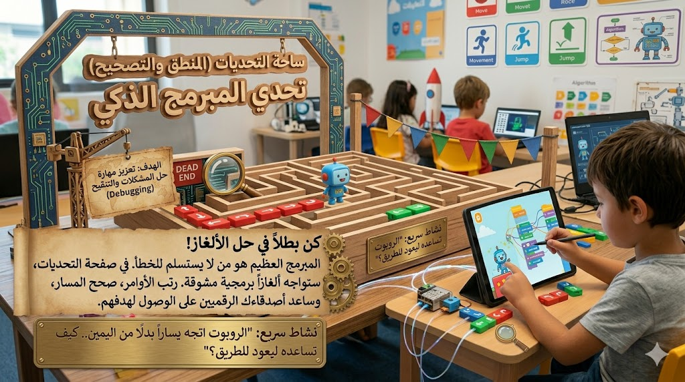
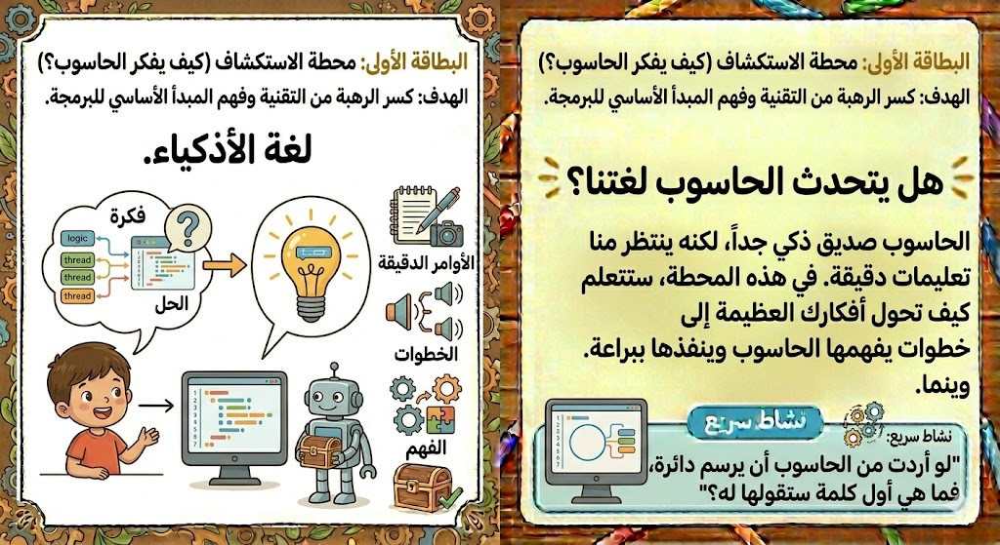
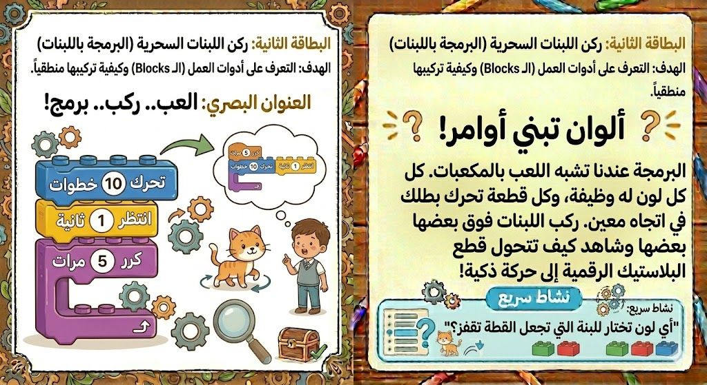

الأوامر
الأمر هو تعليمة واحدة مثل تحرك، أو قل مرحبًا، أو استدر، أو انتظر. والبرنامج هو مجموعة أوامر تعمل معًا. عندما يرى الطفل البرنامج على شكل أوامر صغيرة، يصبح فهمه أسهل بكثير ويستطيع تعديل كل خطوة وحدها.
مفاهيم البرمجة
البرمجة تعني أن نعطي الحاسوب أوامر واضحة ومرتبة حتى ينفذ مهمة محددة. عندما يفهم الطفل هذه الفكرة يدرك أن الحاسوب لا يخمن، بل يتبع التعليمات التي نبنيها له خطوة بعد خطوة. لهذا السبب نتعلم كيف نرتب الأوامر وكيف نختبرها وكيف نصلحها إذا لم تعمل بالشكل المطلوب.
في هذه الصفحة نقدم مفاهيم البرمجة الأساسية بفقرات قصيرة ومتصلة وصور توضيحية، حتى ينتقل الطفل من الفهم النظري إلى الاستعداد للتطبيق. كل مفهوم هنا يمهد للصفحات التالية التي تحتوي على اللبنات البرمجية والأنشطة العملية والتحديات.

الأمر هو تعليمة واحدة مثل تحرك، أو قل مرحبًا، أو استدر، أو انتظر. والبرنامج هو مجموعة أوامر تعمل معًا. عندما يرى الطفل البرنامج على شكل أوامر صغيرة، يصبح فهمه أسهل بكثير ويستطيع تعديل كل خطوة وحدها.
التسلسل يعني أن تنفذ الأوامر بالترتيب. لو غيرنا مكان بعض الأوامر قد نحصل على نتيجة مختلفة. لذلك نتدرب على وضع الخطوة الأولى ثم الثانية ثم الثالثة حتى نصل إلى الهدف بطريقة صحيحة.
الخوارزمية هي خطة أو خطوات مرتبة لحل مشكلة أو تنفيذ مهمة. ويمكن أن نراها في الحياة اليومية أيضًا، مثل خطوات ارتداء الملابس أو ترتيب الحقيبة أو صنع عصير. البرمجة تعلم الطفل كيف يبني هذه الخطوات بوضوح.
إذا أردنا تنفيذ نفس الحركة أكثر من مرة، نستخدم التكرار. بهذه الفكرة نكتب أوامر أقل وننجز عملاً أكبر. وهي من أهم المفاهيم التي تجعل الكود منظمًا وذكيًا وسهل القراءة.
الشرط يساعد البرنامج على اتخاذ قرار. مثل: إذا وصلت الشخصية إلى الحافة فاستدر، وإذا التقطت النجمة فأضف نقطة. ومن خلاله يفهم الطفل أن بعض الأوامر تعتمد على موقف أو حدث معين.
من الطبيعي أن لا يعمل البرنامج من أول مرة. لذلك نجرب ونراقب النتيجة ثم نعدل الخطوات حتى نصل إلى الحل الصحيح. هذا يجعل الطفل أكثر صبرًا وقدرة على الملاحظة وحل المشكلات.

